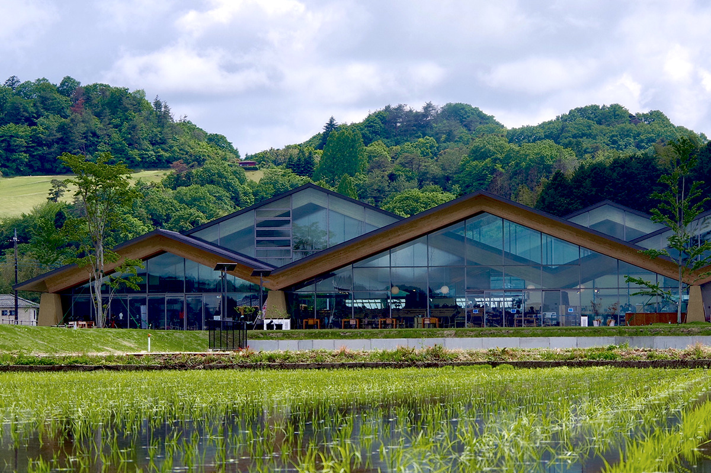
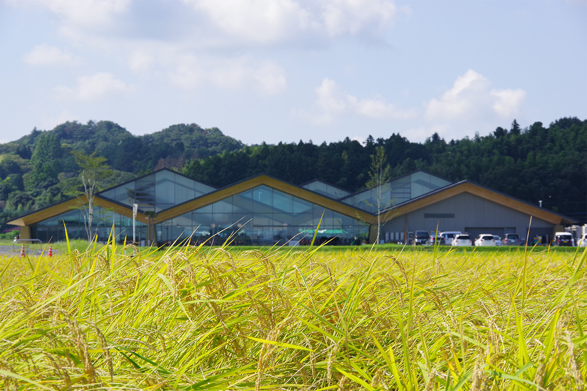
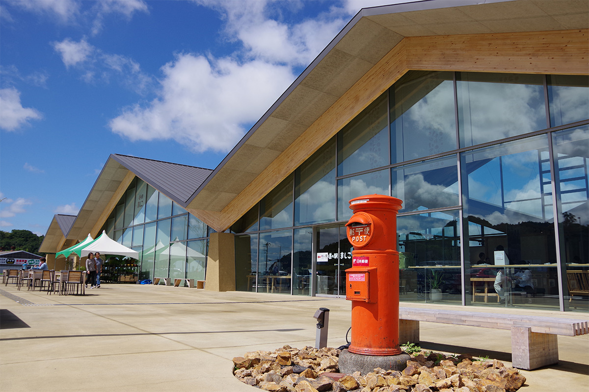
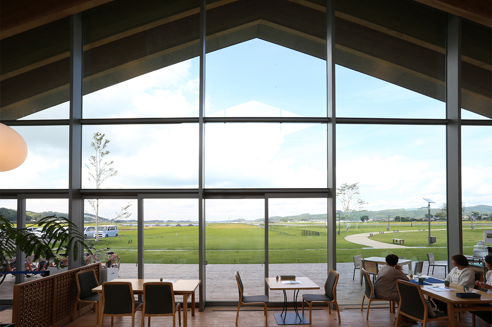
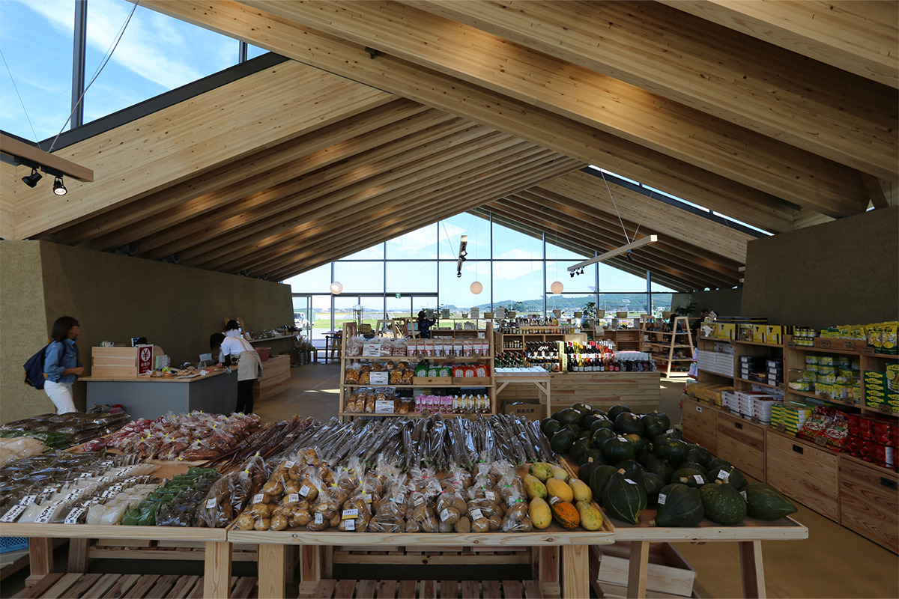
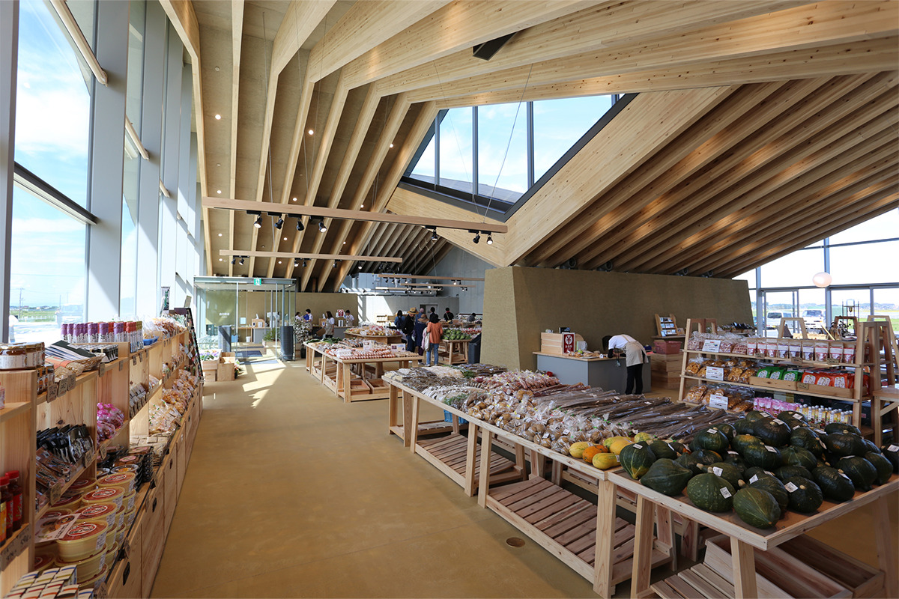
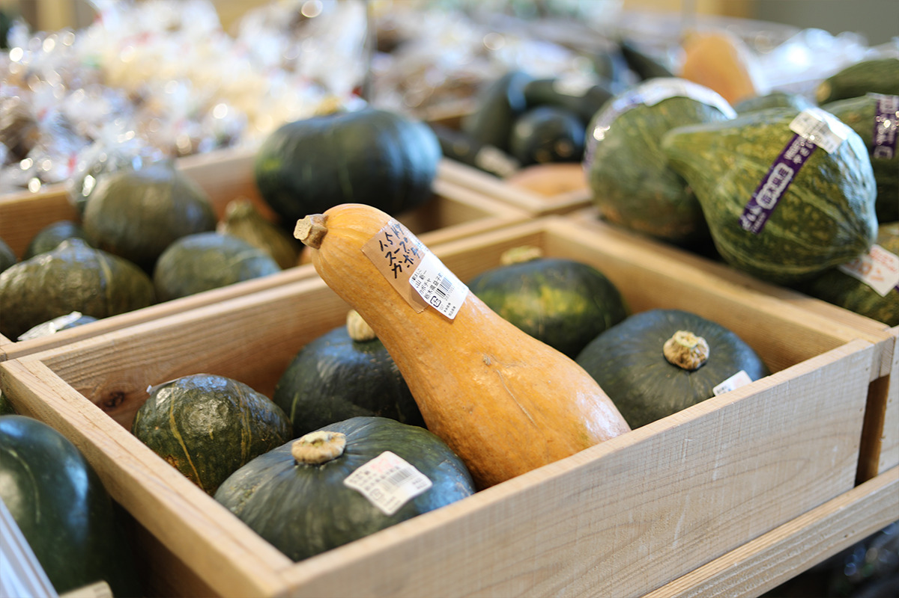
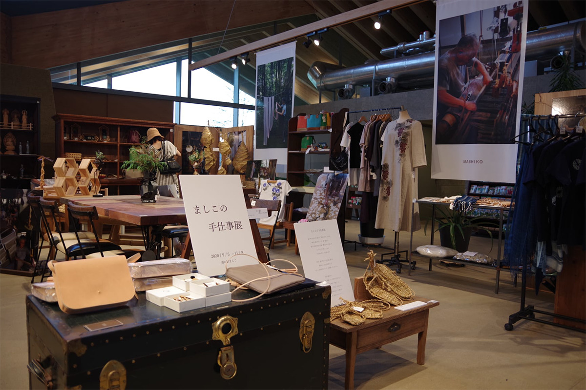
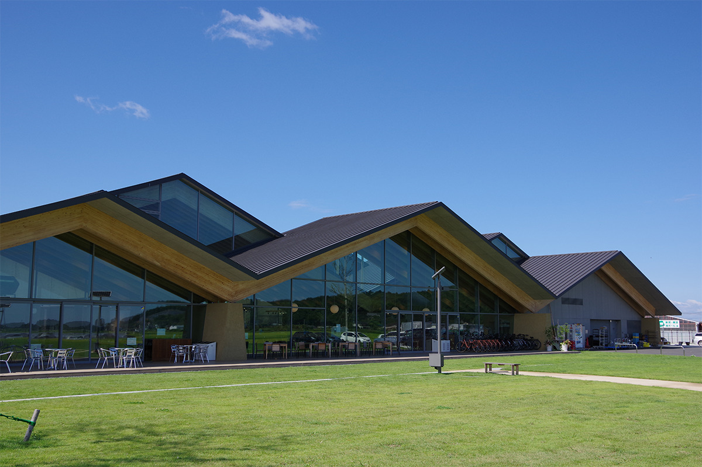

Префектура Тотиги · Масико · архитектура и рынок
Придорожная станция «Масико»: крыши в ритме холмов, кедр из местного леса и овощи двухсот ферм

Среди рисовых полей на юге Масико стоит стеклянное здание под тремя деревянными крышами. Это придорожная станция, где продают овощи, джемы и ремёсла городка, а построена она из того, что архитекторы нашли в окружающем пейзаже.
Место
Станция среди полей
Масико, город на востоке префектуры Тотиги, известен по всей Японии своей керамикой. Весной и осенью здесь проходит ярмарка керамики, и на неё съезжается множество гостей. О самом городе и его гончарах рассказывает статья «Масико: город керамики и мингэй».
Придорожная станция «Масико» открылась в октябре 2016 года и стала 24-й такой станцией в префектуре. Так в Японии называют комплексы у дороги, где путешественник может передохнуть, купить местные продукты и узнать о крае. Станция стоит у префектурной дороги № 257, в нескольких километрах от центра, где тесно стоят гончарные мастерские и лавки. Вокруг тянутся поля, а за ними со всех сторон поднимаются невысокие пологие горы, словно отгораживая эту долину от остального мира.

Придорожная станция здесь не просто магазин у трассы. Она должна показывать приезжим, чем богат край, а местным жителям напоминать, кто они и откуда. Архитекторы поставили себе задачу: построить здание только из того, что видно вокруг. И форму, и материалы они искали в пейзаже, чтобы постройка сама подтверждала, каков этот край.
Архитектура
Крыша, повторяющая горы
Главная черта здания в его крыше. Её скаты повторяют уклон хребтов, которые видны вокруг, а три ряда крыш один за другим задают тот же ритм, что и гряды холмов. Издалека крыши и горы сливаются в одну линию.

Пролёт крыши достигает 32 метров. Держат её балки из кедра «ямидзо-суги», который растёт в лесах, принадлежащих самому городу. Брёвна превратили в клеёный брус на местной фабрике. Сечение балок одинаковое при любом пролёте, а нагрузку распределяют частотой их установки: так конструкция остаётся простой и даёт архитекторам свободу. Поэтому заказ на брус сделали ещё на стадии проектирования, и деревья успели срубить, высушить и склеить до начала строительного года. Полы и стены сделаны из местной гончарной глины, той же, что идёт на керамику Масико, и внутри здание плавно продолжает окружающие поля и горы.

Внутри пространство то расширяется, то сужается. Между крышами, поставленными со сдвигом по высоте, проходят полосы верхних окон, и сверху льётся яркий свет. Путь по залу напоминает прогулку по складкам ближних гор, а за каждым поворотом ждут новые товары.


Так здание вписывается в пейзаж городка во всём: как символ, как постройка и как пространство, по которому идёт человек.
MOUNT FUJI ARCHITECTS STUDIO
Станцию спроектировала мастерская MOUNT FUJI ARCHITECTS STUDIO, которую вместе возглавляют Масахиро Харада и Мао Харада. Масахиро Харада работал у Кэнго Кумы и в мастерской Араты Исодзаки, прежде чем открыть своё бюро, и в 2022 году преподавал на архитектурном факультете Технологического института Сибаура, где когда-то учился сам. Проект выбрали по открытому конкурсу, а в 2017 году он получил главную премию Архитектурного института Японии, первую для префектуры Тотиги.
Покупки и еда
Что купить и где поесть
На рынке «Масико-но марсе» продают то, что выросло на земле Масико: свежие овощи, сезонные фрукты и сделанные из них пикули и джемы. Свой урожай сюда привозят около двухсот ферм, в основном из самого городка и соседних мест.

Масико живёт ремеслом, поэтому рядом с продуктами стоят вещи для дома, сделанные руками местных мастеров.

В ресторане «Масико-но гохан» подают комплексные обеды тэйсёку и блюда из овощей, которые в этот день оказались самыми вкусными. Из местных фруктов здесь делают десерты и напитки.

Если поедете в Масико, загляните на станцию: здесь можно попробовать то, что родилось на этой земле, и увидеть, как здание и природа становятся одним пейзажем.
Придорожная станция «Масико»
- Адрес
- префектура Тотиги, уезд Хага, Масико, Нагацуцуми, 2271
- Телефон
- +81 285-72-5530
- Часы работы
- 9:00–18:00
- Выходные
- второй вторник месяца
- Сайт
- m-mashiko.com
Фото: mashiko company, MOUNT FUJI ARCHITECTS STUDIO.